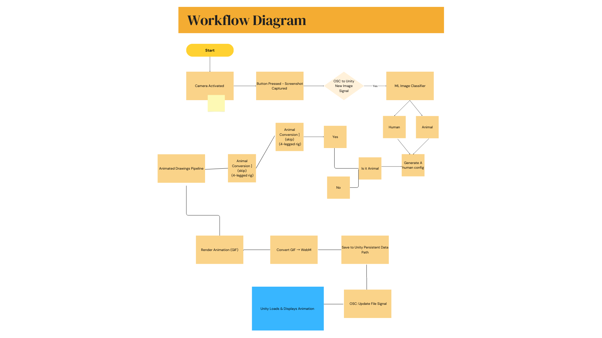

Technical Write-Up
Doodly Do is an interactive installation that brings visitor-submitted hand-drawn characters to life through real-time animation. Participants create simple drawings, which are then captured, processed, and animated using machine learning techniques. The project playfully bridges the physical and digital worlds, allowing static doodles to transform into expressive, moving characters.
This installation was presented at the opening of The Petting Zoo.
At the core of the system is Meta’s open-source AnimatedDrawings repository, which provides automated tools for pose estimation, skeleton extraction, and animation of 2D drawings. The pipeline has been extended with custom classification logic, animal-specific rig conversion, OSC-based system communication, and Unity-based rendering to support a live, public-facing interactive experience.
The installation operates as a modular, locally deployed pipeline coordinated through OSC messaging. User drawings are captured via camera, analyzed by machine learning models, animated using the AnimatedDrawings framework, and rendered in a custom Unity environment.
All processing runs locally on an NVIDIA GTX 1080 GPU, achieving an average response time of 8–10 seconds from drawing submission to on-screen animation.

Camera Capture
The system activates a camera to capture a screenshot of the visitor’s drawing.
New Image Signal (OSC)
Once the image is captured, an OSC message is sent to indicate that a new image is available
for processing.
Image Classification
A locally trained machine learning classification model analyzes the drawing to determine
whether the character is humanoid or animal.
Humanoid Configuration Generation
Using Meta’s AnimatedDrawings pipeline, the system performs limb and torso detection,
image segmentation, and pose estimation. This process generates a standard humanoid
configuration file, including skeletal joint positions and segmentation masks.
Animal Conversion (Conditional)
If the drawing is classified as animal, the humanoid configuration is programmatically
adapted into a four-legged skeletal structure. If the drawing is humanoid, this step is skipped.
Animation Rendering
Characters are animated using predefined motion patterns. Humanoids use one of several
motion variations, while animals use motion adapted from the converted quadruped rig.
The animation output is initially rendered as a GIF.
Format Conversion
The GIF animation is converted into a Unity-compatible WebM video format to ensure
efficient playback and performance.
File Storage & Unity Update
The WebM file is saved to Unity’s persistent data path. A final OSC message notifies Unity
that a new animation file is ready, triggering a brief visual transition before display.
Hardware: NVIDIA GTX 1080
Average latency: 8–10 seconds
Primary bottlenecks: Pose estimation and animation rendering
Processing mode: Fully local
Machine Learning & Animation: Meta’s AnimatedDrawings
Custom ML Models: Local image classification (humanoid vs. animal)
Communication: OSC (Open Sound Control)
Rendering Engine: Unity
Media Formats: GIF (intermediate), WebM (final)
By allowing visitors to see their drawings immediately animated, Doodly Do emphasizes authorship, play, and transformation. The installation positions machine learning not as invisible automation, but as an active collaborator — translating imperfect, playful human marks into motion and personality.
This is the previous version of the installation from Kamuna 2023 August 15 - 2023.